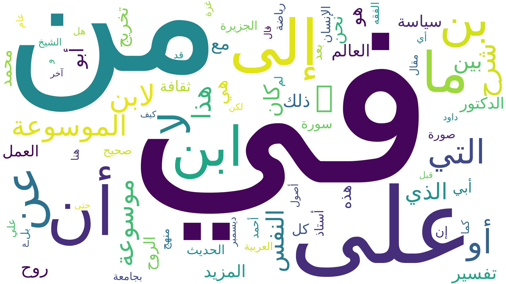

Le mot « âme » en arabe
Dans la langue arabe, le concept d’âme ne se limite pas à un seul terme. Il est principalement exprimé par الروح (al-rūḥ) et النفس (al-nafs). Ces deux notions renvoient à des dimensions spirituelles, religieuses et psychologiques distinctes, très présentes dans les textes littéraires et religieux.
Tableau d’analyse lexicale
Le tableau ci-dessous présente les résultats de l’extraction automatique réalisée à partir du corpus arabe (les graphies, les URLs, le code HTTP, l'encodage, les occurrences,ect.).
Nuage de mots
Le nuage de mots permet de visualiser les termes les plus fréquemment associés aux notions de الروح et النفس dans le corpus.

Analyse linguistique
L’analyse des données met en évidence une distinction nette entre الروح, souvent associée à une dimension spirituelle et transcendante, et النفس, davantage liée à l’individu, à la psychologie et aux émotions. Cette dualité confirme la richesse conceptuelle du mot « âme » en arabe, comparativement aux autres langues étudiées.